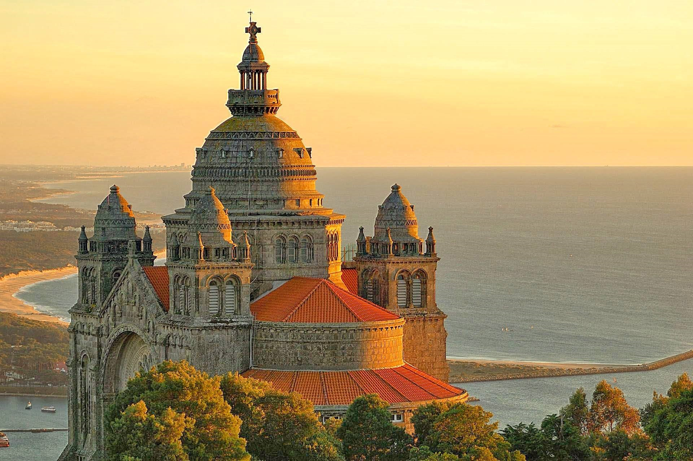

|
Viana do Castelo é uma das mais bonitas cidades do norte de Portugal. A sua participação nos Descobrimentos portugueses e, mais tarde, na pesca do bacalhau mostram a sua tradicional ligação ao mar.
A Viana do Castelo depressa se acede a partir do Porto, ou de Valença para quem vem de Espanha.
Viana enriqueceu-se com palácios brasonados, igrejas e conventos, chafarizes e fontanários que constituem uma herança patrimonial digna de visita. No Posto de Turismo pode-se pedir uma brochura e fazer percursos de inspiração manuelina, renascença, barroca, art deco ou do azulejo. Percorrendo algumas das ruas do centro histórico sempre se chega à Praça da República, o coração da cidade. É onde ficam o edifício da Misericórdia e o chafariz, quinhentistas, assim como os antigos Paços do Concelho. Não longe fica a românica Sé ou Igreja Matriz.
|
 |